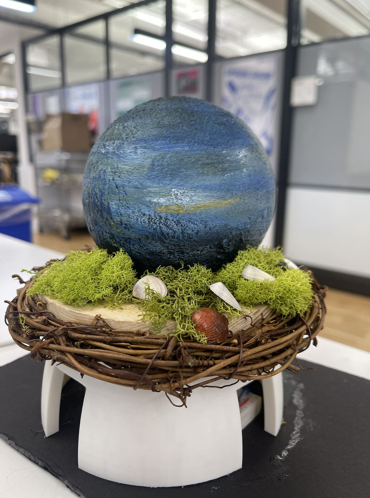
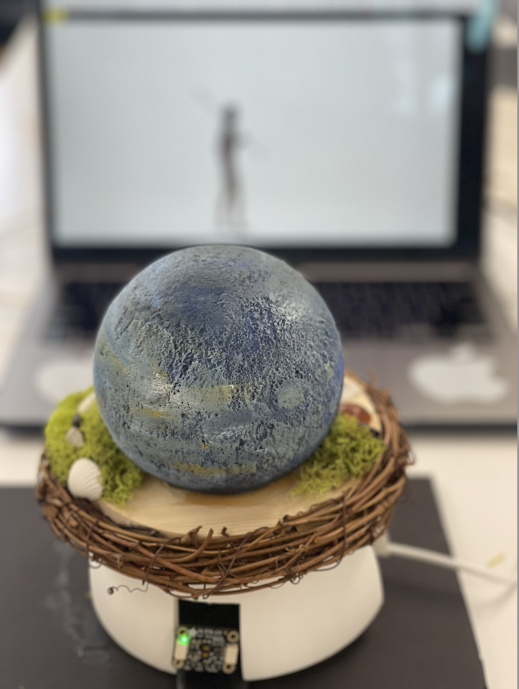
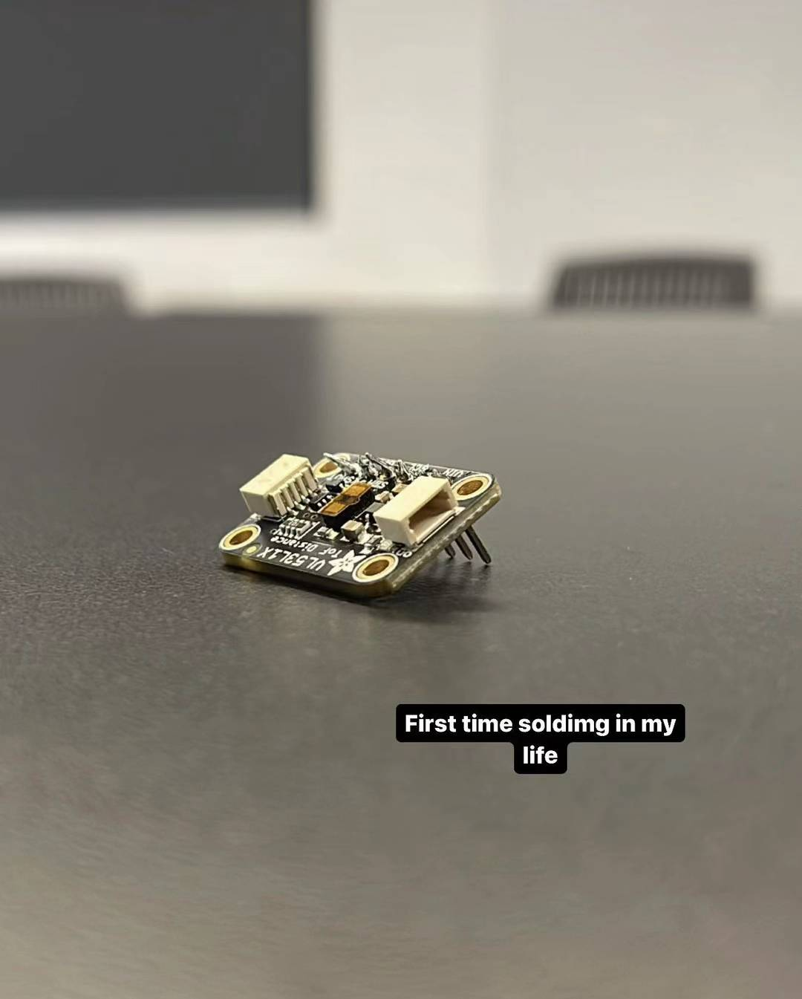
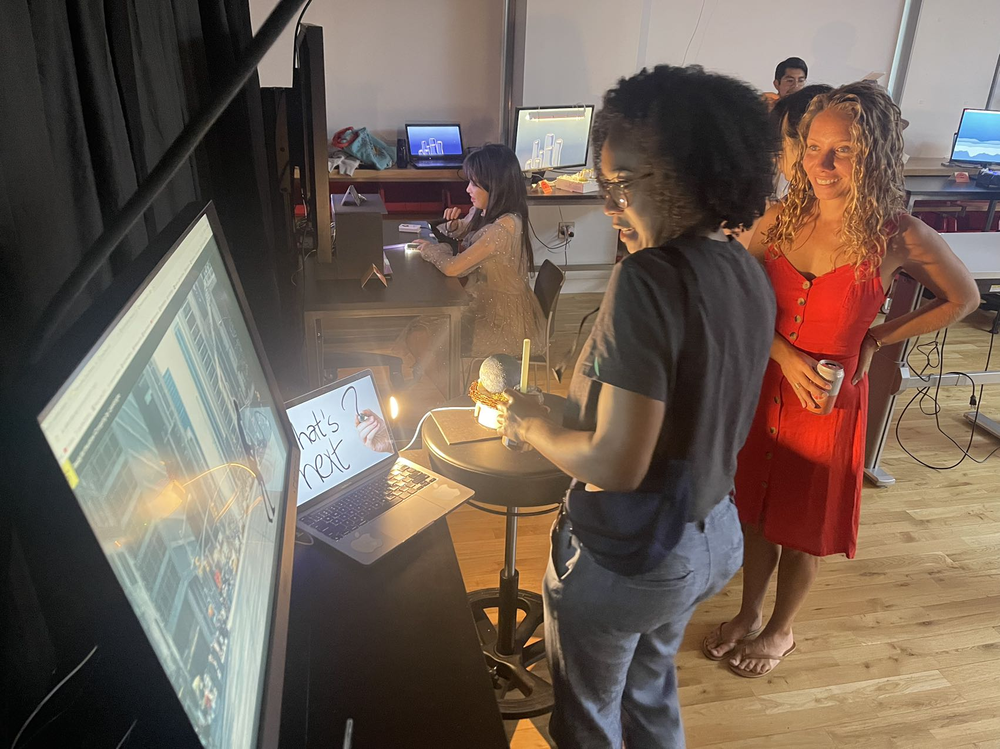

My name is Liyanbing He, and I am a Shanghai-New York-based freelance director with a deep passion for filmmaking. My work is driven by a profound curiosity about the social impact on human lives, mental health, historical narratives, and overarching philosophical concepts. I am dedicated to crafting artistic creations that delve into these profound themes, using film as my canvas for exploration.
I embarked on a project titled "What is Next." In this innovative endeavor, I harnessed the capabilities of a time-of-flight sensor in conjunction with a 3D-printed representation of our planet, Earth. This combination allowed me to detect the audience's distance from the sensor and, in response, manipulate the images displayed on the p5.js editor. Through this dynamic interplay, I aimed to mirror the evolutionary journey of humanity throughout history, provoking contemplation on our collective path forward. "What is Next" represents my ongoing commitment to blending technology and storytelling to create thought-provoking art that resonates with audiences on a profound level.
 During the course of the project, I eagerly ventured into a multitude of new skills, each contributing to a richer and more versatile skill set. Embracing coding allowed me to breathe life into digital aspects of the project, bringing interactivity and functionality to the forefront. Exploring the realms of 3D printing and modeling introduced me to the world of three-dimensional design, enabling me to craft tangible components with precision and creativity. The art of soldering became a valuable tool for connecting electronic elements, while laser cutting facilitated the creation of intricate patterns and structures. Lastly, diving into Arduino development opened doors to endless possibilities in automation and control. Each of these newfound skills not only enriched my capabilities but also expanded my horizons, transforming me into a more resourceful and adaptable creator.
 Expanding upon this project offers exciting opportunities to delve even deeper into the realm of interactive technology and creative expression. One promising avenue involves the incorporation of additional time-of-flight sensors, strategically positioned to detect hand movements within the 3D model of Earth. This enhancement could turn the project into a truly immersive and magical experience. Imagine this: as a user's hands move gracefully around the 3D Earth model, the embedded time-of-flight sensors capture the precise positioning of their hands in real-time. These sensor inputs would then be processed and translated into dynamic interactions with the digital canvas in the p5.js editor. For instance, as your hands approach the North Pole, the visual content on the p5.js canvas might shift to display images and information related to polar regions. When your hands drift towards the equator, the content could seamlessly transition to showcase topics pertinent to the tropics. This intuitive and responsive design would provide users with a dynamic, hands-on way to explore and learn about different geographic regions, cultures, or historical events associated with specific locations on Earth.